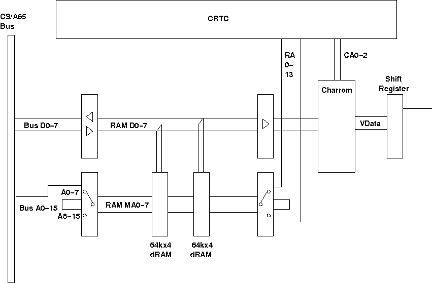

CS/A65 Video board
This board implements the a video board for the CS/A65 bus.
The board uses 64k dynamic RAM that is accessed in a
time-shared way, by the CPU at Phi2 high, and by the
video at Phi2 low. Due to this interlock the board can
display 40 columns a line at 1MHz system clock, and 80 columns
a line at 2MHz system clock.
News:
-
2007-06-29
Added helper boards that convert the video signals
to composite video.
-
2006-11-01
Added driver code.
This is the video-specific hardware part of the
CS/A65 console driver. It provides the following
methods:
-
inivid - initialize video hardware
-
setact - set the CRTC display address to the current screen
-
crsron - set the CRTC cursor to the correct address (the hardware cursor is actually flashing all the time)
The video memory is memory-mapped into CPU address space,
so the rest of the console driver (the hardware independent part)
acts on this memory mapped video.
The console can actually work in 40 columns (1MHz CPU clock) and
80 columns mode (2MHz CPU clock). This is detected by
checking bit 7 of the
freq variable.
Status: ok
Notes
 |
To use the vdc board with a standard TV set for
example, a so-called "composite video" signal
must be generated, that includes all three
video, horizontal sync and vertical sync signals.
This board is derived from the "Composite Video Circuit"
from the book "The PET revealed".
|
|
This circuit produces a not so bright picture
on my TV set, and I did not investigate how improve
brightness (might even be my TV).
|
Files
Status: ok
Notes
|
To use the vdc board with a standard TV set for
example, a so-called "composite video" signal
must be generated, that includes all three
video, horizontal sync and vertical sync signals.
This board is derived from the "PET Video Mixer"
by the PET users club of England.
|
|
The original board did not have R2 and R5, and
produces a very bright picture on my TV set.
Therefore I introduced R2 and R5 to adjust brightness
This modification is untested, though.
|
Files
Status: untested
Notes
|
The board has an improved layout on the 1.4A board, in that it
has decent GND and VCC supply networks. Also it removes the delayed
/CAS input to /RAMWE, as this was a bug. The board also got a jumper
to set the external graphics character mode (for the PET emulation)
via control register. The input to IC14A is inverted, to avoid jitter
in the SR load line (adds an inverter from IC15 into the input line)
|
 |
This layout is untested.
|
|
Most of the TTL chips are 'ALS technology, but a few
have to be 'LS for timing requirements: IC9 is a
74LS245 so that the data read from the RAM is held
on the bus longer, as the CPU requires a certain
hold time of that data. IC21 is a 74ALS14(!) so that the
delay between /RAS and /CAS is still long enough.
IC9 may probably be an 'ALS04 as well, but never
change a running system... IC15 is a 74LS04.
|
Files
Status: untested
Notes
|
In addition to the timing bugs this board implements
a larger character ROM - now the character can be
more than 8 pixels high. Also the crude
circuit for the generation of the composite video
signal is gone. Instead the video connector has
an additional supply voltage pin, so the video plug
can implement any better composite generation.
|
|
This layout is untested.
|
|
Most of the TTL chips are 'ALS technology, but a few
have to be 'LS for timing requirements: IC9 is a
74LS245 so that the data read from the RAM is held
on the bus longer, as the CPU requires a certain
hold time of that data. IC21 is a 'LS so that the
delay between /RAS and /CAS is still long enough.
IC9 may probably be an 'ALS04 as well, but never
change a running system...
|
Files
Status: prototype
Notes
|
This board version is a redo of the
original board, with the known bugs fixed.
|
|
During testing with the PETCPU and
new CS/A board - with 74ALS technology I decided to
better restrict the timing on the video board
(which was not the cause of the problem), so
I patched the board. The results can be found in
version 1.4.
|
Files
Status: prototype with bugs
Notes
|
This is the original video board.
|
|
This schematics has a bug in the
circuit to generate the shift register load
signal. It went unnoticed as my prototype board
was manually soldered.
|
Files

Block diagram of the vdc board. Only some relevant info
is shown. It is actually a pretty simple design, if
it were not for the timing...
The CPU accesses the memory during Phi2 high, so
then the BUSA0-15 and D0-7 are connected to the
memory address and bus lines. During Phi2 low the
video accesses the memory and thus RA0-13 is connected
to the memory. The byte read for the video is latched
and given to the character ROM as input. The CA0-2
lines select the correct scan line of the character
in the character ROM. The output of the character ROM
is then shifted out to the video output.
More on how the CRTC works can be found on the
CRTC page.


{kind=link}
{kind=link}
{kind=link}
{kind=link}
{kind=link}
{kind=link}


{kind=link}
{kind=link}
{kind=link}
{kind=link}
{kind=link}
{kind=link}
{kind=link}
{kind=link}